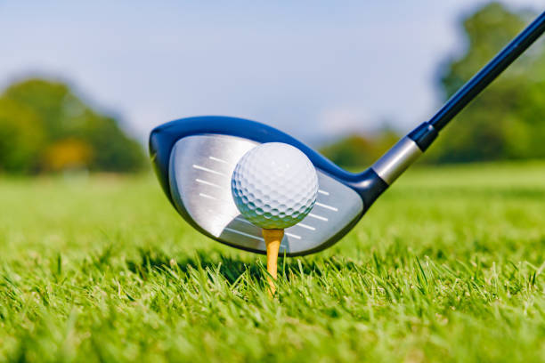
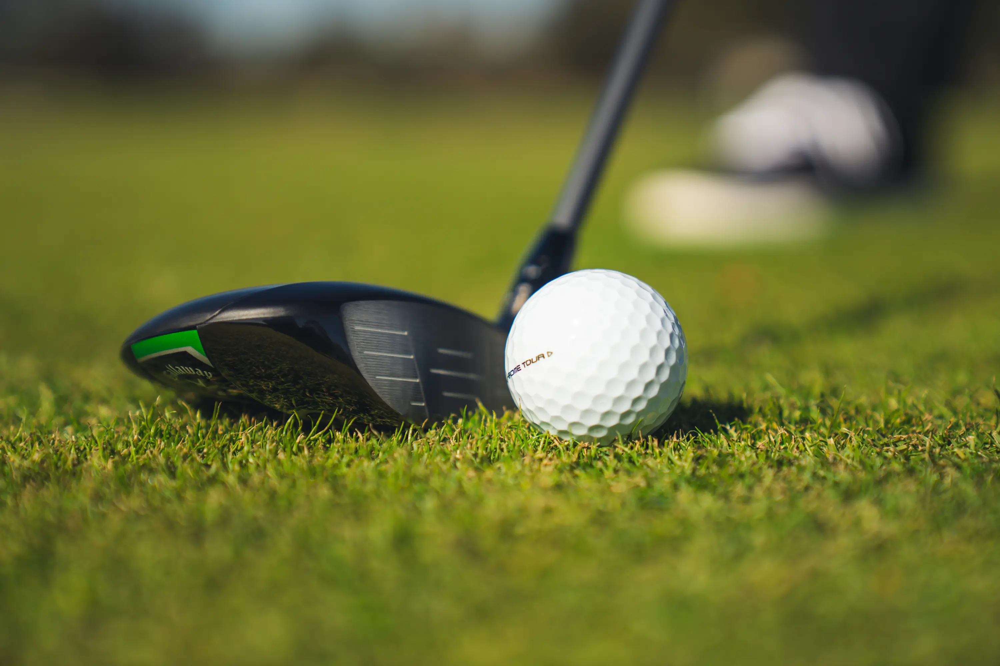
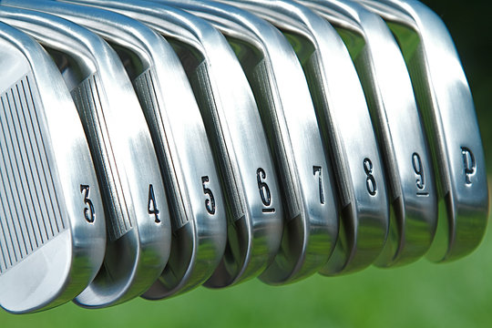
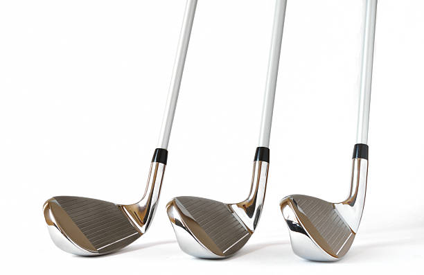

Driver
Called 'Longnoses" in the 1500s, The driver is designed to hit tee shots and is the longest club with the biggest head. This is the club that will give you the most distance to get you closer to the hole and is typically used at the start of par 4's or par 5's.

Fairway Woods
Fairway woods, originally called "grassed drivers", are ideal for long-distance shots from the fairway. These clubs become especially useful on longer holes, like par 5's, because they will, ideally, let you get to the green or around the green with two shots. These clubs have slightly smaller heads and higher lofts than drivers and despite not being made out of wood anymore, are still called fariway woods.

Irons
Named "spoons" in the 1500's, irons are used for medium to short distance shots on the course. Typically you will see a set of irons numberd from 3 to 9. It is important to note that the lower the number of iron, the further the ball will travel when hit, and the higher the number of iron, the less distance you will get on the ball. It is important to know how far you typically hit your irons, as it well let you gage which one you should hit.

Wedges
Dubbed "niblicks" in the 1500's, wedges are the club that has the highest loft and are used for short shots onto the green, chip shots around the green, and shots for if you end up in a sand bunker. There are many types of wedges for different situations. There is the attack wedge, used for low flight precision shots. The pitching wedge, used for longer, higher trajectory shots onto the green. The sand wedge, used for sand bunkers, and many more. There are even degree wedges like 58, 58, and 60, to help fill in distance and chip shot gaps that other wedges don't account for.
Putter
Termed the "cleek" in the 1500's, the putter is used to hit the ball on the green, twoards the whole. It is the simpelest, yet the most complicated club in your bag. Not only do you have to be extremelty precise with your firmness, grip, and speed. You must also be able to read the green, and predict which way the ball will break, if at all, towards the hole.